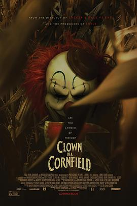

5.6
玉米地小丑
Clown in a Cornfield
2025
美国
评分 5.6
导演:
艾利·克雷格
演员:
凯蒂·道格拉斯 / 卡尔森·迈克马克 / 阿隆·艾布拉姆斯 / 卡桑德拉·波滕扎 / 维丽蒂·马克斯 / 威尔·萨索
类型:
恐怖
剧情简介
当十七岁的奎因·梅布鲁克与父亲格伦搬到密苏里州的小镇凯特尔·斯普林斯，希望借助父亲的新医生职位重新开始生活，她没想到的是，眼前等待她的是一个逐渐裂开的社区和一桩古老的恐怖。小镇的玉米糖浆工厂因火灾而关闭，经济崩塌，成年人与青少年之间的裂痕愈发深刻。奎因很快融入了由市长之子科尔领衔的一群高中朋友。他们拍摄恶搞视频，以工厂的吉祥物小丑“弗伦多”为主题。然而，当他们深入一片玉米地举办派对时，那些被视作玩笑的恐惧变成现实——穿着弗伦多装束的杀手从玉米行中浮现，阴冷的玉米叶随步履翻动，血腥的杀戮无声蔓延。随着夜色降临，奎因与朋友们被迫逃进废弃工厂，墙壁上斑驳的喷漆和破碎的机器齿轮在火光中投出畸形的影子。她开始怀疑，这场袭击并非偶然，而是镇上成年人对青少年的审判。市长、警长、老师甚至普通镇民都可能是背后操控者。他们戴上小丑面具，用镰刀、链锯和愤怒构建起复仇的仪式。影片用玉米地阴影构建起“埋藏的伤痛”，用派对和社交媒体代表少年群体的表面轻松，再用一连串急促的镜头剪辑将恐怖突如其来地拉入现实。奎因置身于郁郁葱葱的玉米行，却感受不到生机，每一根玉米杆都如伸出的手指指向悬而未决的罪责。在这里，恐怖不仅源于一名小丑的复仇，更在于一个衰落小镇对未来的绝望与对过去的逃避。奎因最后一刻明白：真正的杀手不只是那张伪装的笑脸，而是社区、家庭和时间留下的伤口。